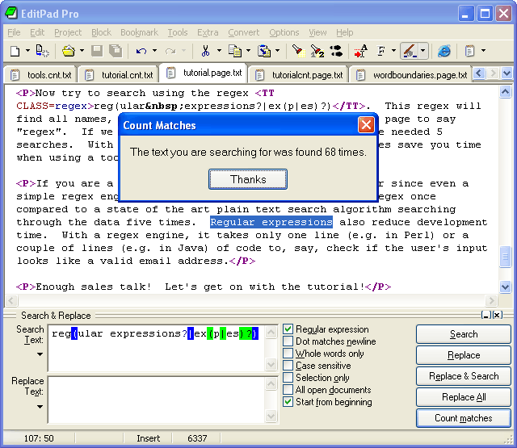

| Easily create and understand regular expressions today. Compose and analyze regex patterns with RegexBuddy's easy-to-grasp regex blocks and intuitive regex tree, instead of or in combination with the traditional regex syntax. Developed by the author of this web site, RegexBuddy makes learning and using regular expressions easier than ever. Get your own copy of RegexBuddy now, and get a FREE printable PDF version of the regex tutorial on this web site. |
In this tutorial, I will teach you all you need to know to be able to craft powerful time-saving regular expressions. I will start with the most basic concepts, so that you can follow this tutorial even if you know nothing at all about regular expressions yet.
But I will not stop there. I will also explain how a regular expression engine works on the inside, and alert you at the consequences. This will help you to understand quickly why a particular regex does not do what you initially expected. It will save you lots of guesswork and head scratching when you need to write more complex regexes.
Basically, a regular expression is a pattern describing a certain amount of text. Their name comes from the mathematical theory on which they are based. But we will not dig into that. Since most people including myself are lazy to type, you will usually find the name abbreviated to regex or regexp. I prefer regex, because it is easy to pronounce the plural "regexes". On this web site, regular expressions are printed as regex. If your browser has proper support for cascading style sheets, the regex should be highlighted in red.
This first example is actually a perfectly valid regex. It is the most basic pattern, simply matching the literal text regex. A "match" is the piece of text, or sequence of bytes or characters that pattern was found to correspond to by the regex processing software. Matches are highlighted in blue on this site.
\b[A-Z0-9._%-]+@[A-Z0-9._%-]+\.[A-Z]{2,4}\b  is a more complex pattern. It describes a series of letters, digits, dots, percentage signs and underscores, followed by an at sign, followed by another series of letters, digits, dots, percentage signs and underscores, finally followed by a single dot and between two and four letters. In other words: this pattern describes an email address.
is a more complex pattern. It describes a series of letters, digits, dots, percentage signs and underscores, followed by an at sign, followed by another series of letters, digits, dots, percentage signs and underscores, finally followed by a single dot and between two and four letters. In other words: this pattern describes an email address.
With the above regular expression pattern, you can search through a text file to find email addresses, or verify if a given string looks like an email address. In this tutorial, I will use the term "string" to indicate the text that I am applying the regular expression to. I will highlight them in green. The term "string" or "character string" is used by programmers to indicate a sequence of characters. In practice, you can use regular expressions with whatever data you can access using the application or programming language you are working with.
A regular expression "engine" is a piece of software that can process regular expressions, trying to match the pattern to the given string. Usually, the engine is part of a larger application and you do not access the engine directly. Rather, the application will invoke it for you when needed, making sure the right regular expression is applied to the right file or data.
As usual in the software world, different regular expression engines are not fully compatible with each other. It is not possible to describe every kind of engine and regular expression syntax (or "flavor") in this tutorial. I will focus on the regex flavor used by Perl 5, for the simple reason that this regex flavor is the most popular one, and deservedly so. Many more recent regex engines are very similar, but not identical, to the one of Perl 5. Examples are the open source PCRE engine (used in many tools and languages like PHP), the .NET regular expression library, and the regular expression package included with version 1.4 and later of the Java JDK. I will point out to you whenever differences in regex flavors are important, and which features are specific to the Perl-derivatives mentioned above.
You can easily try the following yourself in a text editor that supports regular expressions, such as EditPad Pro. If you do not have such an editor, you can download the free evaluation version of EditPad Pro to try this out. EditPad Pro's regex engine is fully functional in the demo version. As a quick test, copy and paste the text of this page into EditPad Pro. Then select Edit|Search and Replace from the menu. In the search pane that appears near the bottom, type in regex in the box labeled "Search Text". Mark the "Regular expression" checkbox, unmark "All open documents" and mark "Start from beginning". Then click the Search button and see how EditPad Pro's regex engine finds the first match. When "Start from beginning" is checked, EditPad Pro uses the entire file as the string to try to match the regex to.
When the regex has been matched, EditPad Pro will automatically turn off "Start from beginning". When you click the Search button again, the remainder of the file, after the highlighted match, is used as the string. When the regex can no longer match the remaining text, you will be notified, and "Start from beginning" is automatically turned on again.
Now try to search using the regex reg(ular expressions?|ex(p|es)?)  . This regex will find all names, singular and plural, I have used on this page to say "regex". If we only had plain text search, we would have needed 5 searches. With regexes, we need just one search. Regexes save you time when using a tool like EditPad Pro.
. This regex will find all names, singular and plural, I have used on this page to say "regex". If we only had plain text search, we would have needed 5 searches. With regexes, we need just one search. Regexes save you time when using a tool like EditPad Pro.
If you are a programmer, your software will run faster since even a simple regex engine applying the above regex once will outperform a state of the art plain text search algorithm searching through the data five times. Regular expressions also reduce development time. With a regex engine, it takes only one line (e.g. in Perl, PHP, Java or .NET) or a couple of lines (e.g. in C using PCRE) of code to, say, check if the user's input looks like a valid email address.
Regex Tutorial Table of Contents

Page URL: http://www.Regular-Expressions.info/tutorial.html
Last Updated: 14 January 2005
Copyright © 2003-2005 Jan Goyvaerts. All rights reserved.
| More Information |
| Introduction |
| Quick Start |
| Tutorial |
| Tools and Languages |
| Examples |
| Books |
| Reference |
| About This Site |
| Download and Print |
| PowerGREP 3 |
| Use regular expressions to search through large numbers of text and binary files, such as source code, correspondence, server or system logs, reference texts, archives, etc. Quickly find the files you are looking for, or extract the information you need. Look through just a handful of files, or thousands of files and folders. |
| Perform comprehensive text and binary replacement operations for easy maintenance of web sites, source code, reports, etc. Preview replacements before modifying files, and stay safe with flexible backup and undo options. |
| Work with plain text files, Unicode files, binary files, files stored in zip archives, and even MS Word documents, Excel spreadsheets and PDF files. Runs on Windows 98, ME, NT4, 2000 & XP. |
| More information |
| Download PowerGREP now |